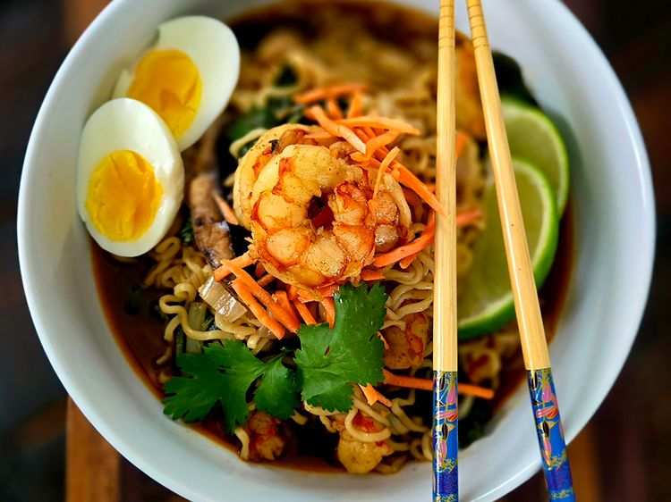

Shrimp Ramen recipe

Ingredients
- 2 tablespoons sesame oil, divided
- 2 tablespoons plus 2 teaspoons chili powder, divided
- 1 pound peeled large shrimp
- 2 shallots, sliced
- 2 cloves garlic , chopped
- 2 tablespoons chopped fresh ginger
- 1/2 cup sliced portobello mushrooms
- 8 cups seafood stock, chicken broth or vegetable broth
- 1/4 cup soy sauce, or to taste
- 1/4 cup freshly squeezed lime juice
- 4 (3 ounce) packages ramen noodles, seasoning packets discarded
- 2 large soft boiled or hard boiled eggs
- 2 cups chopped fresh spinach
- lime slices, chopped cilantro, or shredded carrots, for garnish (optional)
Home